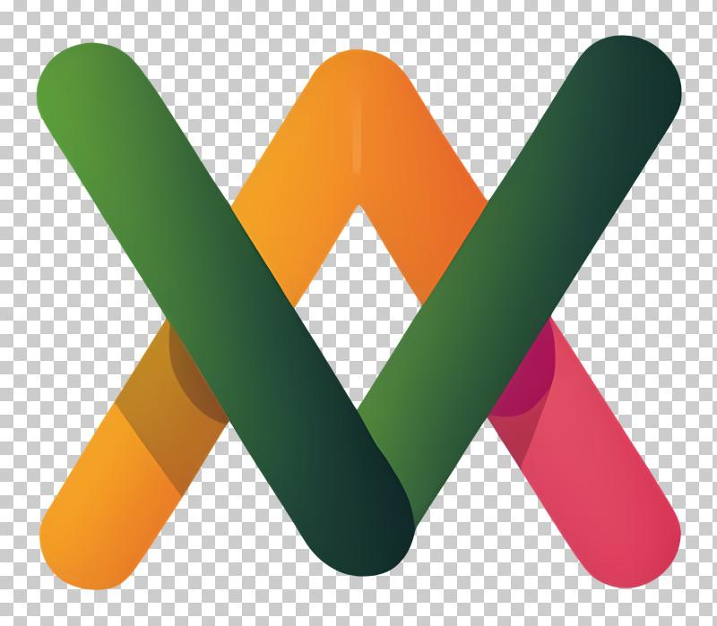

Choosing an image format can be confusing. JPG is popular for photographs, PNG is known for transparency, and WebP is designed to offer efficient compression with support for both transparency and animation.
But which format should you actually use?
The answer depends on what your image contains, where you plan to use it, how important image quality is, and whether you need a transparent background.
In this guide, you will learn how JPG, PNG, and WebP differ, which format is suitable for different situations, and how to avoid common mistakes when converting images for websites, online stores, documents, and social media.
Quick comparison: JPG vs PNG vs WebP
| Feature | JPG / JPEG | PNG | WebP |
|---|---|---|---|
| Best starting point | Photographs | Logos, screenshots, sharp graphics | Many website images |
| Lossy compression | Yes | No | Yes |
| Lossless compression | No, in ordinary JPG workflows | Yes | Yes |
| Transparency | No | Yes | Yes |
| Animation | No | APNG uses the PNG extension | Yes |
| File size | Often small for photos | Can be larger for detailed photos | Often smaller at comparable visual quality |
| Browser compatibility | Very broad | Very broad | Broad support in modern browsers |
The comparison describes typical characteristics, not guaranteed file sizes. Results depend on the source image, encoder, compression settings, and intended quality.
1. What is JPG, and when should you use it?
JPG, also called JPEG, is a common image format for photographs. It uses lossy compression, which reduces file size by discarding some image information.

This can be useful when an image contains many colors, gradients, textures, and subtle changes in brightness.
JPG is a good choice for
- Photographs on blogs and websites.
- Product photography when a solid background is acceptable.
- Images shared through email or messaging.
- Photo galleries where file size matters.
- Images that do not need transparency.
When JPG may not be the best choice
JPG does not support transparent pixels. It can also produce visible artifacts around small text, sharp edges, diagrams, and logos when compressed too heavily.
Practical tip: If a photograph is too large for your website, try resizing it to the required display dimensions and then exporting it at a suitable JPG quality. Compare the final image visually before publishing.
2. What is PNG, and when should you use it?
PNG uses lossless compression, which preserves the image's pixel information during encoding. It also supports transparency, making it useful for graphics that need to sit on different backgrounds.

PNG is a good choice for
- Logos with transparent backgrounds.
- Screenshots containing small text.
- Diagrams, charts, and interface graphics.
- Images where exact pixel reproduction is important.
- Graphics with sharp edges that should remain clear.
When PNG may not be the best choice
PNG can create larger files than lossy formats for detailed photographs. A large PNG photograph may therefore be unnecessarily heavy for a website.
Practical tip: If you have a transparent logo, do not convert it to JPG simply to reduce file size. JPG cannot preserve transparency. Consider optimizing the PNG or testing lossless WebP if your workflow supports it.
3. What is WebP, and why is it useful for websites?
WebP is a modern image format that supports both lossy and lossless compression. It also supports transparency and animation.

It is useful for website owners because it can often provide a smaller image than JPG or PNG while maintaining suitable visual quality. However, the actual savings depend on the image and encoding settings.
WebP is a good choice for
- Website photographs and banners.
- Product images in online stores.
- Images where reducing download size is important.
- Graphics that need transparency.
- Many image assets used in modern web interfaces.
What should you consider before using WebP?
WebP has broad support in modern browsers, but you should still check compatibility with your target software, publishing system, and image-processing workflow.
If you need to support a particular application that does not accept WebP, keep an appropriate JPG or PNG version available.
Practical tip: Test a representative image before converting an entire image library. A smaller file is useful only if the result meets your visual quality and compatibility requirements.
4. Which format should you use for your specific image?
This is the most important part of the decision. Instead of memorizing technical definitions, start with the type of image you are working with.
| Your situation | Recommended starting format | Why |
|---|---|---|
| A photograph for a blog post | JPG or WebP | Both can compress photographic content efficiently |
| A logo with a transparent background | PNG or WebP | Both support transparency |
| A screenshot with tiny text | PNG or lossless WebP | Lossless compression helps preserve sharp details |
| A product photo for an online store | WebP or JPG | Compare file size, visual quality, and platform compatibility |
| A transparent decorative graphic | PNG or WebP | The transparent background can be retained |
| A chart with thin lines and labels | PNG or lossless WebP | Sharp edges and readable labels matter |
| An image for older software | JPG or PNG | These formats have very broad compatibility |
| A website banner that is too large | Test WebP and JPG | Compare the output at the required dimensions |
These are practical starting points, not absolute rules. For important images, compare the results using your actual content.
5. Why does the same image have different file sizes?
Imagine that you save one photograph in JPG, PNG, and WebP. The three files may look similar on screen, but their sizes can differ significantly.
This happens because the formats use different compression methods and settings.
Other factors also affect the result:
- Pixel dimensions: A 3000 × 2000 image contains many more pixels than a 900 × 600 image.
- Image complexity: A detailed photograph and a simple illustration contain different kinds of visual information.
- Compression quality: Stronger lossy compression can reduce size but may make defects more visible.
- Transparency: PNG and WebP can preserve transparent areas; JPG cannot.
- Encoding settings: Different tools may produce different results from the same source.
An important distinction: file size versus image dimensions
Image dimensions are measured in pixels, while file size is measured in bytes, KB, or MB.
Reducing the dimensions can reduce the amount of image data, but it also changes the image's resolution. Changing the file format does not necessarily change the pixel dimensions.
If your image is both too large in dimensions and too large in file size, resizing and then choosing suitable compression settings may be more effective than conversion alone.
6. A practical test: Find the best format for your image
Rather than trusting a blanket claim that one format is always smaller, run a simple comparison.
Test A: Photograph
Save the same photograph as JPG and WebP using suitable quality settings. Compare the file sizes and inspect fine details.
Test B: Transparent logo
Compare PNG with lossless WebP, if available. Check that transparency is preserved and edges remain clean.
Test C: Screenshot
Compare PNG with a suitable WebP export. Zoom in on text and thin lines to spot artifacts.
Record your results
Use the table below to record your own measurements. Keep the source image and pixel dimensions consistent for a fair format comparison.
| Test | Original format | Output format | File size | Quality notes |
|---|---|---|---|---|
| Photograph | Your source | JPG | Measure | Inspect details |
| Photograph | Same source | WebP | Measure | Inspect details |
| Logo | Your source | PNG | Measure | Check transparency |
| Logo | Same source | WebP | Measure | Check transparency |
| Screenshot | Your source | PNG | Measure | Inspect text |
| Screenshot | Same source | WebP | Measure | Inspect text |
No results are filled in because these comparisons have not yet been performed on your actual tools. Adding genuine measurements and screenshots will make this article more distinctive and useful.
To calculate how much smaller an output is:
For example, if a file decreases from 400 KB to 300 KB, the reduction is 25%. This is an illustrative calculation, not a test result.
7. Common image-format mistakes and how to fix them
Mistake 1: Converting every image to JPG
This can remove transparency and introduce compression artifacts in graphics.
Fix: Choose the format based on the image's purpose. Use PNG or WebP when transparency is required.
Mistake 2: Assuming WebP always produces the smallest file
WebP is efficient in many cases, but the result depends on the source image, encoder, and settings.
Fix: Compare representative files at suitable visual quality rather than choosing by extension alone.
Mistake 3: Reducing quality until the image looks bad
An extremely small image is not helpful if important details become blurry.
Fix: Test a few quality settings and inspect the image at its intended display size.
Mistake 4: Forgetting about the target platform
Some content-management systems, forms, or editing applications may have format restrictions.
Fix: Check the destination's supported formats before converting a whole batch of images.
Mistake 5: Confusing compression with resizing
Compression changes how image data is stored. Resizing changes pixel dimensions.
Fix: If the image is unnecessarily large in both dimensions and file size, consider both operations separately.
8. How to convert an image to the right format
Follow these simple steps:
- Identify the image type: photograph, transparent logo, screenshot, or illustration.
- Decide whether transparency is required.
- Check the image's pixel dimensions and intended use.
- Choose a suitable output format based on the comparison guide.
- Convert a sample image using an available tool.
- Check the new file size, dimensions, and visual quality.
- Keep the original file until you are satisfied with the result.
You can start with the QuickToolsPK Image Format Converter to explore supported image conversions. If you also need to reduce the file size, try the Image Compressor.
9. Frequently asked questions
Is JPG better than PNG?
Is WebP better than JPG?
Does WebP support transparent backgrounds?
Does converting PNG to JPG reduce quality?
Which format is best for website images?
Should I convert all my old website images to WebP?
Can I convert JPG to PNG to restore quality?
Conclusion
JPG, PNG, and WebP each serve different purposes.
Use JPG as a practical starting point for photographs, PNG for transparency and sharp graphics, and WebP when you want an efficient modern format for many web images.
Most importantly, do not choose a format based only on its name. Check the image's purpose, dimensions, transparency requirements, compatibility, and actual output quality.
The right image format is the one that gives you the best balance of quality, file size, and usability for your specific task.